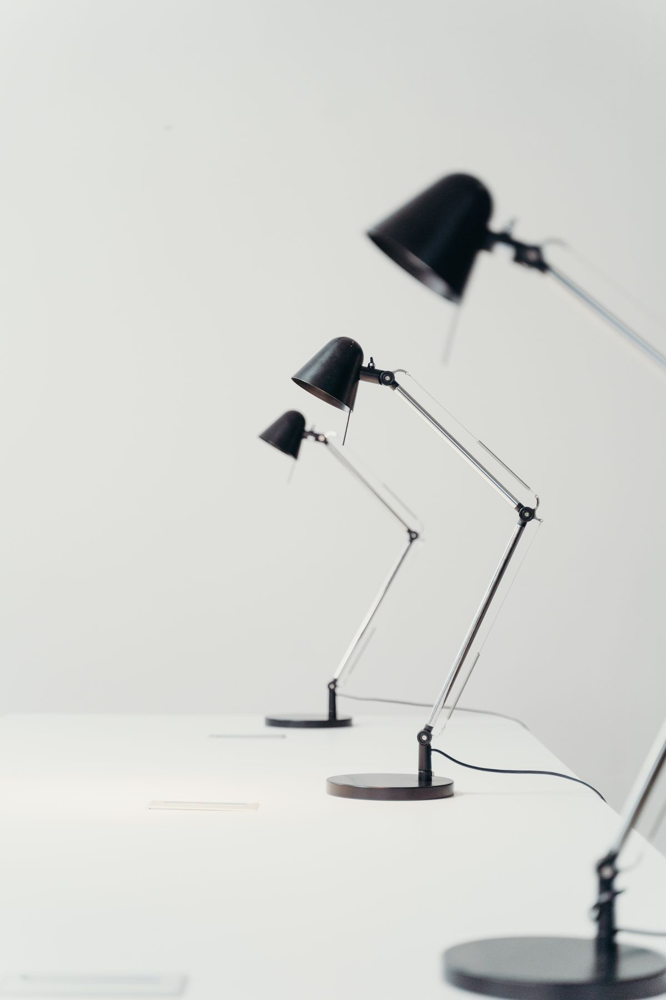
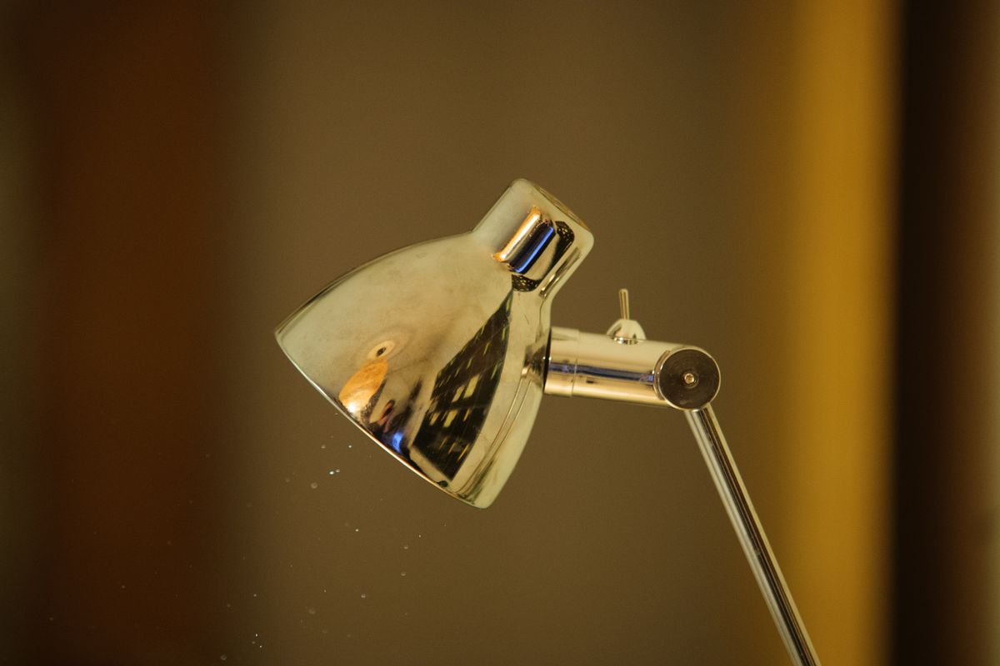
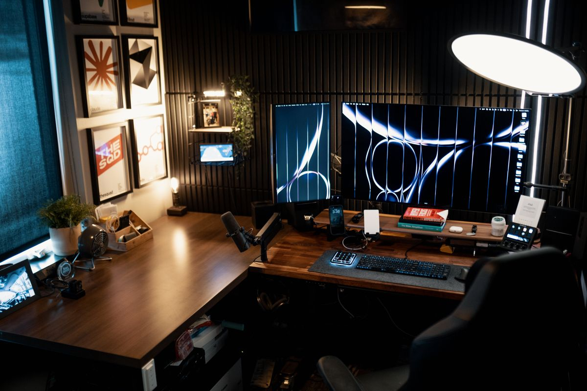
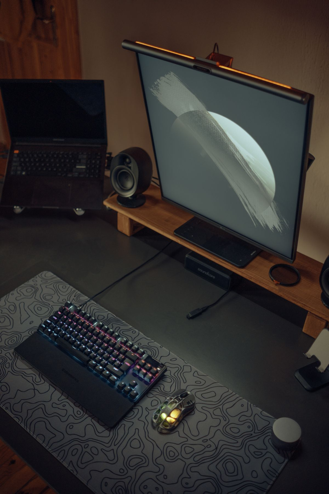

โคมไฟทำงานแบบไหนถนอมสายตา รวมตัวเลือกโคมไฟตั้งโต๊ะสำหรับคนทำงานหนักหน้าจอ
แสงส่งผลต่อสุขภาพดวงตาและสมาธิในการทำงานมากกว่าที่คิด รวมคุณสมบัติที่โคมไฟทำงานที่ดีควรมี พร้อมตัวเลือกโคมไฟตั้งโต๊ะสำหรับคนทำงานหน้าจอทุกสไตล์ ซื้อผ่าน Shopee
อัปเดต กรกฎาคม 2026
คนที่ทำงานหน้าจอคอมพิวเตอร์วันละหลายชั่วโมง มักมองข้ามเรื่องแสงสว่างในพื้นที่ทำงาน ทั้งที่จริงแล้วแสงเป็นหนึ่งในปัจจัยสำคัญที่สุดที่ส่งผลต่อสุขภาพดวงตาและสมาธิในการทำงาน หลายคนใช้แสงจากหลอดไฟเพดานเพียงอย่างเดียว ซึ่งมักไม่เพียงพอหรือให้แสงที่ไม่เหมาะกับการจ้องจอเป็นเวลานาน ทำให้เกิดอาการตาล้า ปวดหัว หรือง่วงง่ายกว่าปกติ
โคมไฟตั้งโต๊ะที่ออกแบบมาสำหรับการทำงานโดยเฉพาะ ไม่ใช่แค่โคมไฟธรรมดา แต่มักมาพร้อมฟีเจอร์ปรับความสว่าง ปรับอุณหภูมิสี และลดแสงกะพริบที่เป็นอันตรายต่อดวงตา บทความนี้จะพาไปดูว่าโคมไฟทำงานที่ดีควรมีคุณสมบัติอะไรบ้าง พร้อมตัวเลือกที่น่าสนใจสำหรับโต๊ะทำงานทุกสไตล์
แสงสว่างส่งผลต่อการทำงานอย่างไร
แสงที่ไม่เหมาะสมเป็นสาเหตุหลักของอาการที่เรียกว่า Computer Vision Syndrome หรือกลุ่มอาการตาล้าจากหน้าจอ ซึ่งรวมถึงอาการตาแห้ง ปวดตา มองภาพเบลอ และปวดศีรษะ สาเหตุหนึ่งมาจากความต่างของความสว่างระหว่างหน้าจอกับสภาพแวดล้อมรอบข้างที่มากเกินไป
การมีแสงเสริมที่เหมาะสมช่วยลดความต่างของแสงนี้ ทำให้ดวงตาไม่ต้องปรับโฟกัสบ่อย นอกจากนี้แสงสีขาวนวลหรือแสงที่ปรับโทนได้ตามช่วงเวลายังช่วยรักษาจังหวะการตื่นนอนตามธรรมชาติ (circadian rhythm) ทำให้ตอนกลางวันตื่นตัวและตอนเย็นผ่อนคลายได้ดีขึ้น
คุณสมบัติที่โคมไฟทำงานที่ดีควรมี
แสงไร้แสงกะพริบ (Flicker-Free)
หลอดไฟราคาถูกบางรุ่นมีการกะพริบที่ตาเปล่ามองไม่เห็น แต่ส่งผลสะสมต่อดวงตาในระยะยาว โคมไฟคุณภาพดีมักระบุคุณสมบัติ Flicker-Free ไว้ชัดเจนบนสเปกสินค้า
ปรับอุณหภูมิสีได้ (Color Temperature)
แสงสีเหลืองอมส้มเหมาะกับการอ่านหนังสือผ่อนคลาย ส่วนแสงสีขาวเย็นช่วยให้ตื่นตัวเหมาะกับงานที่ต้องใช้สมาธิสูง โคมไฟที่ปรับได้หลายโทนจะยืดหยุ่นกับงานที่หลากหลายมากกว่า
ปรับความสว่างได้หลายระดับ (Dimmable)
ความสว่างที่เหมาะสมขึ้นอยู่กับเวลาของวันและแสงธรรมชาติที่มีอยู่ โคมไฟที่ปรับความสว่างได้ละเอียดจะช่วยให้ปรับแสงให้พอดีกับสภาพแวดล้อมได้ตลอดวัน
แขนปรับทิศทางได้อิสระ
โคมไฟที่มีข้อต่อหลายจุดช่วยให้จัดมุมแสงได้ตรงจุดที่ต้องการ ลดเงาบนกระดาษหรือคีย์บอร์ดขณะทำงาน
โคมไฟทำงานที่น่าสนใจ

1. โคมไฟ LED หนีบขอบโต๊ะ
เหมาะสำหรับโต๊ะที่มีพื้นที่จำกัดหรือโต๊ะปรับระดับที่ไม่อยากให้ฐานโคมไฟกินพื้นที่ผิวโต๊ะ ติดตั้งด้วยคลิปหนีบขอบโต๊ะ ปรับแขนได้หลายทิศทาง โคมไฟ LED หนีบขอบโต๊ะ ปรับ 3 โทนสี เหมาะกับคนที่ต้องการประหยัดพื้นที่บนโต๊ะให้มากที่สุด

2. โคมไฟตั้งโต๊ะแบบมีเซนเซอร์วัดแสงอัตโนมัติ
รุ่นที่มีเซนเซอร์ตรวจจับแสงในห้องและปรับความสว่างของโคมไฟให้เหมาะสมโดยอัตโนมัติ ช่วยลดการปรับตั้งค่าเองบ่อยๆ โคมไฟตั้งโต๊ะพร้อมเซนเซอร์วัดแสงอัตโนมัติ เหมาะกับคนที่ทำงานในเวลาไม่แน่นอน ทั้งกลางวันกลางคืน

3. โคมไฟแถบยาวสำหรับวางเหนือจอ (Monitor Light Bar)
แทนที่จะวางโคมไฟด้านข้าง โคมไฟรุ่นนี้ติดตั้งไว้เหนือขอบจอมอนิเตอร์ ให้แสงส่องลงมาที่โต๊ะโดยไม่สะท้อนหน้าจอ ไม่กินพื้นที่โต๊ะเลยแม้แต่น้อย โคมไฟแถบติดขอบจอมอนิเตอร์ ปรับความสว่างผ่านรีโมท เป็นตัวเลือกยอดนิยมของคนที่ทำงานกับจอเป็นหลัก

4. โคมไฟตั้งโต๊ะสไตล์มินิมอลพร้อมชาร์จไร้สายในตัว
รุ่นที่รวมฟังก์ชันชาร์จไร้สายไว้ที่ฐานโคมไฟ ช่วยลดจำนวนอุปกรณ์และสายไฟบนโต๊ะ โคมไฟตั้งโต๊ะพร้อมแท่นชาร์จไร้สายในตัว เหมาะกับคนที่ชอบโต๊ะทำงานแบบมินิมอลไม่มีของเกะกะ
5. โคมไฟหนีบพร้อมโหมดถนอมสายตาสำหรับอ่านหนังสือ
สำหรับคนที่ทำงานควบคู่กับการอ่านเอกสารกระดาษ โคมไฟที่มีโหมดเฉพาะสำหรับการอ่านจะให้แสงกระจายทั่วถึงโดยไม่แสบตา โคมไฟหนีบโต๊ะโหมดถนอมสายตาสำหรับอ่านหนังสือ
เกณฑ์การเลือกซื้อโคมไฟทำงาน
ค่า CRI (Color Rendering Index) ควรเลือกโคมไฟที่มีค่า CRI สูงกว่า 80 ขึ้นไป เพื่อให้สีที่เห็นใกล้เคียงกับแสงธรรมชาติมากที่สุด ลดความล้าของดวงตา
พื้นที่บนโต๊ะที่มี ถ้าโต๊ะเล็กหรือมีจอหลายจอ ควรเลือกโคมไฟแบบหนีบหรือแบบติดขอบจอแทนแบบตั้งฐาน เพื่อประหยัดพื้นที่ผิวโต๊ะ
รูปแบบการใช้งานพลังงาน บางรุ่นใช้สาย USB-C เสียบจากคอมพิวเตอร์หรือปลั๊กไฟโดยตรง ควรพิจารณาตำแหน่งปลั๊กที่มีอยู่ก่อนตัดสินใจซื้อ
ระดับเสียงและการรบกวน แม้เป็นเรื่องเล็กแต่โคมไฟบางรุ่นที่มีพัดลมระบายความร้อนอาจมีเสียงรบกวนขณะทำงานเงียบๆ ควรอ่านรีวิวก่อนตัดสินใจ
สรุป
โคมไฟทำงานที่ดีไม่ใช่แค่เรื่องแสงสว่างเพียงพอ แต่ต้องคำนึงถึงคุณภาพของแสง การปรับแต่งได้ตามความต้องการ และความเหมาะสมกับพื้นที่โต๊ะทำงานของแต่ละคน การลงทุนกับโคมไฟดีๆ สักตัวอาจดูเป็นเรื่องเล็ก แต่ส่งผลโดยตรงต่อสุขภาพดวงตาและสมาธิในการทำงานระยะยาว โดยเฉพาะคนที่ต้องนั่งทำงานหน้าจอวันละหลายชั่วโมงติดต่อกัน
บทความนี้มีลิงก์ affiliate เมื่อคุณซื้อผ่านลิงก์ เราอาจได้รับค่าคอมมิชชั่นโดยที่คุณไม่ต้องจ่ายเพิ่ม